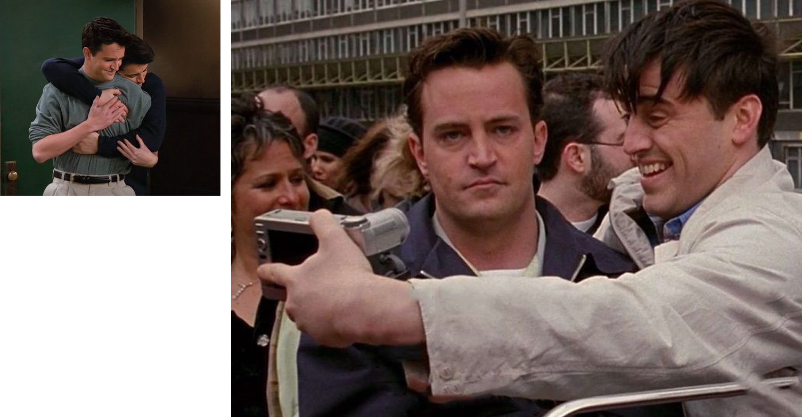
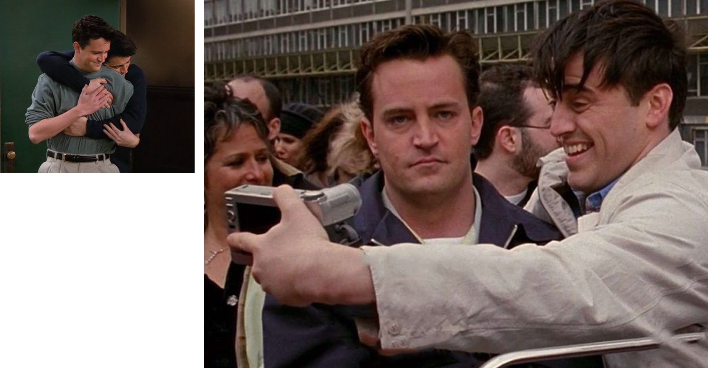
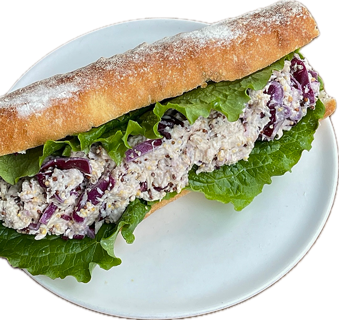
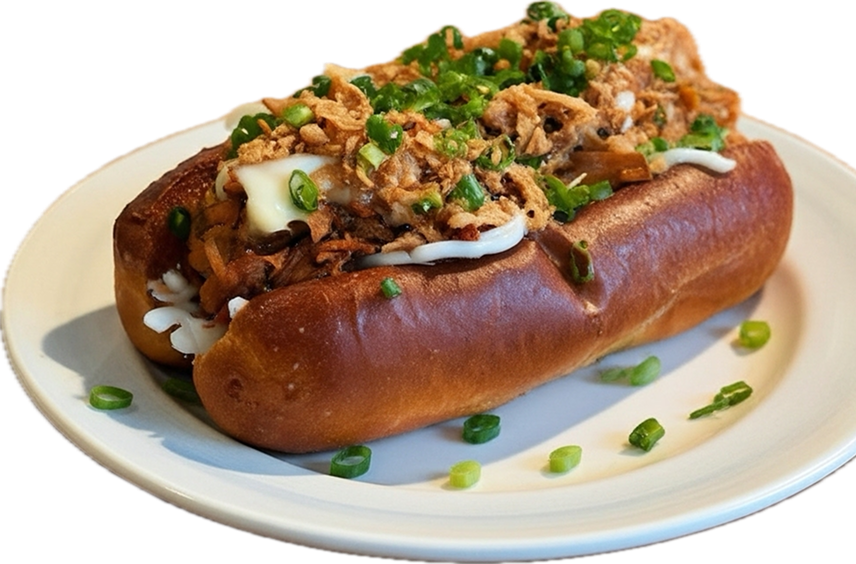
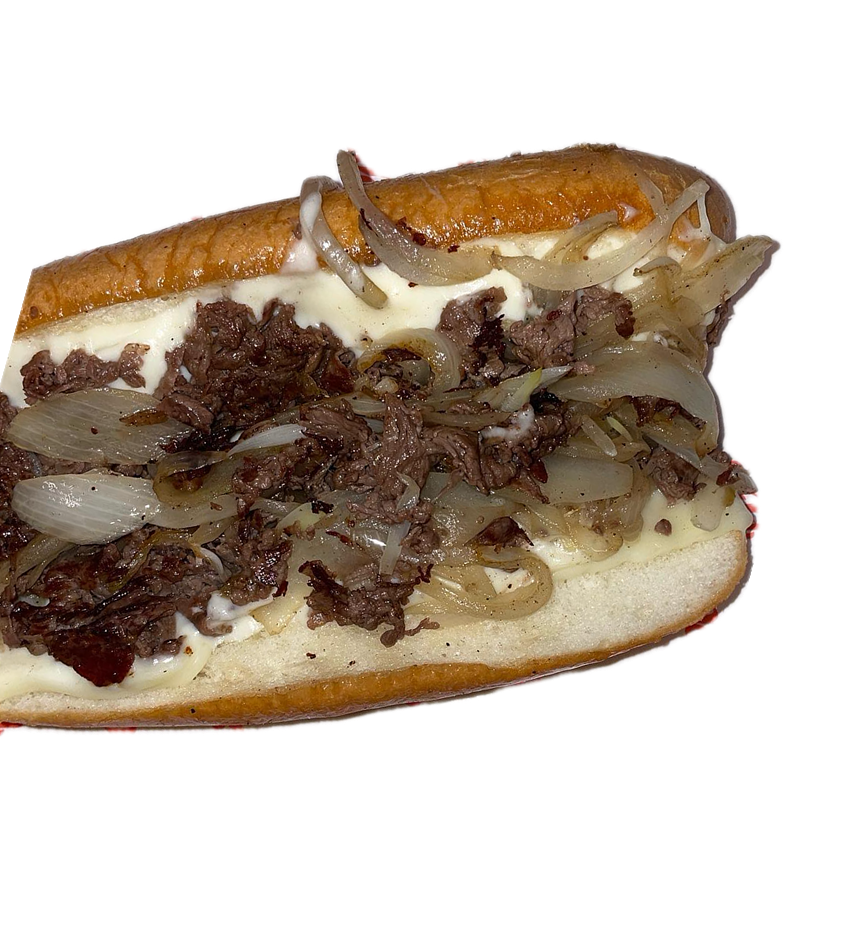
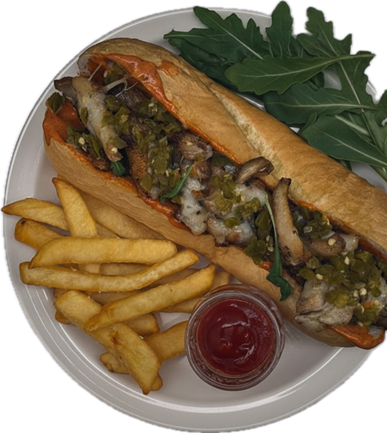
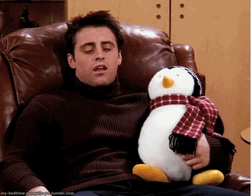
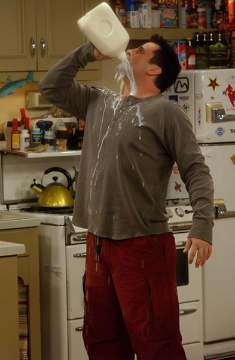
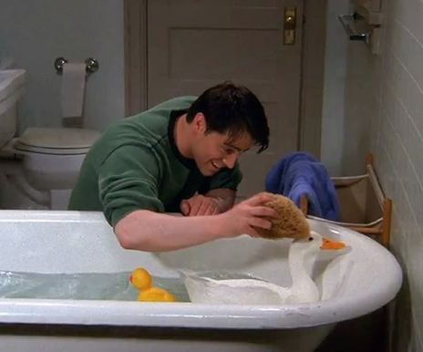

www.joey.com


The aspiring actor whose iconic “How you doin’?” melts hearts everywhere Joey Tribbiani may not be the brightest star in Hollywood, but he shines in ways that matter most. Behind his charming grin and easy confidence lies a heart that’s endlessly loyal, a friend who would share his last slice of pizza… reluctantly, but still share it. He may forget lines and mix up words, yet his sincerity and warmth remind everyone that kindness, laughter, and a good sandwich can sometimes mean more than fame itself.

“Joey, you may not share food, but you’ve always shared your heart with me. You taught me how to chill on a recliner, how to love TV dinners, and how to survive in an apartment where sarcasm is basically oxygen. You’re chaotic, dramatic, and a little clueless sometimes— but to me, you’re the guy who fed me, protected me, and treated a tiny chick like family. So… how you doin’, buddy?”
Joey doesn’t just enjoy food—he worships it with the kind of devotion most people reserve for lifelong dreams. To Joey, a plate of fries isn’t just a snack; it’s a sacred treasure, a symbol of comfort, happiness, and pure Joey energy. When someone reaches over to steal even a single bite, it’s not just rude—it feels like an attack on his very identity. “Joey doesn’t share food!” isn’t merely a catchphrase; it’s a proud, passionate declaration of who he is: a big-hearted, slightly childish, endlessly lovable guy whose loyalty extends to his friends… and especially to his dinner. Trying to take food from Joey isn’t just crossing a line. It's crossing a boundary guarded with the fire of a thousand meatball subs.
Different minds, same heart
Two guys who couldn’t be more different—yet somehow, they just click. Joey’s all heart, impulsive warmth, and endless appetite, while Chandler survives life with sarcasm, awkward jokes, and quiet insecurities. But together, they become the perfect comedy duo with a bond deeper than any punchline. They share jokes, pizza, a pet duck, late-night confessions, and even each other’s worst meltdowns. They bicker like brothers, protect each other like family, and no matter how chaotic life gets, they always show up for one another. When it comes to friendship, these two aren’t just close— they’re the definition of ride-or-die.
 

-


Okay, people, listen up! If you want a sandwich that’ll make your taste buds dance like nobody’s watching, run — don’t walk — to ‘DanceDanceDance.’ Their chicken breast sandwich? Oh man… it’s tender, juicy, and so flavorful it practically hugs your tongue. One bite and you’ll be grinning like a goof, maybe even talking to strangers like, ‘How you doin’?’ Warning: this is a no-sharing zone. Nope. Not even a little. Protect it like it’s your best friend — because it basically is.
-


Alright, sandwich lovers, gather ‘round! If you think you’ve had a great sandwich, think again. ‘A Slice’ has this FoldFork sandwich that’s next-level amazing. Tender bread, perfectly cooked fillings, and just the right amount of gooey goodness. One bite and you’ll be whispering, ‘Oh man… this is art.’ Seriously, forget sharing — this sandwich is all yours, capiche? Protect it with your life!
-

Listen up, meat lovers! If you thought sandwiches were just bread and fillings, think again. PCSS has this steak sandwich that’s basically a flavor explosion. Juicy, tender steak piled high, melted cheese, and bread that’s perfectly toasted — it’s a mouth party. One bite and you’ll be moaning like you just discovered happiness. Sharing? Are you kidding me? This is a solo mission, people. Guard it with everything you’ve got!
-

Alright, listen carefully, food fans! Ryuco’s has this mushroom steak sandwich that’s basically a game-changer. Juicy steak, savory mushrooms, melted cheese, all sandwiched in perfectly toasted bread — it’s like a flavor explosion in every bite. You’ll be moaning, smiling, and maybe even hugging the sandwich. Sharing? Forget it. This one’s strictly a Joey mission. Protect it at all costs!
-

In the end, Joey Tribbiani is pure heart — loyal, goofy, hungry, and endlessly lovable. His charm lingers long after the jokes fade, reminding us that kindness can be simple, and friendship can be deliciously uncomplicated. And remember… he still doesn’t share food.
-  
- 